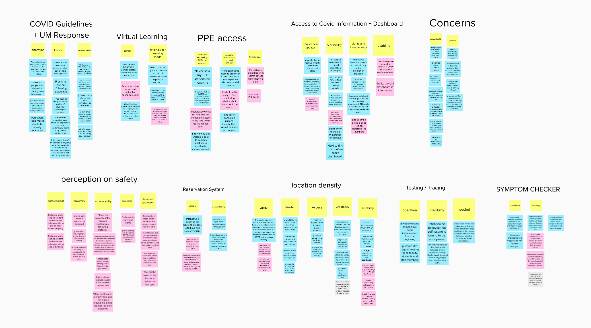

Smart Notifications & A Healthier Campus - an exposure notification app designed for the UM community

DESIGN BRIEF
In the wake of the COVID-19 pandemic, students returning to UM campuses risk widespread transmission. ECHO is an exposure notification app designed for the University of Miami community to prevent COVID transmission on campus. It is designed in the course of Human Centered Design at UM and features exposure detections and integrated COVID test booking system to fight the spread of transmissions on campus.
ROLE
Research
Strategy
Wireframes
High fidelty prototype
TECHNOLOGY
Adobe Illustrator
Adobe XD
RESEARCH

We conducted a total of 18 remote 1:1 interviews — 9 students taking in-person / hybrid classes, 5 remote students and 4 faculties. It was important to identify how students and faculty perceive campus safety and safe practices, as well as how they feel about UM's COVID response. We chose this method to explore potential opportunities by asking individuals what they think, feel, do, believe and expect.
AFFINITY DIAGRAMS
The interview responses were grouped into affinity diagrams to identify patterns.
- Participants found UM's reservation systems difficult to use
- Most participants distrusted UM's response to COVID
- Participants questioned the credibility and accuracy of UM's testing and tracing methods
- Another common theme among participants was privacy fears — they were unclear about how their data was collected and used
REQUIREMENTS
We identified a list of requirements based on the user insights to address the problems. Most notably, the solution must:
- Ensure user privacy and anonymity
- Notify users when there has been a potential exposure
- Provide a seamless COVID test booking experience